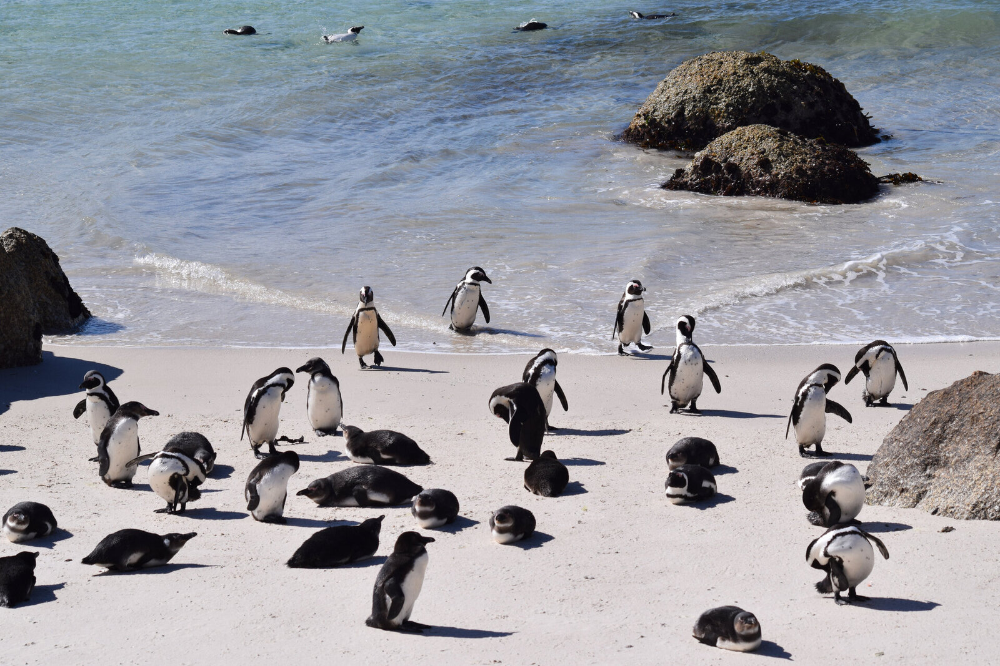
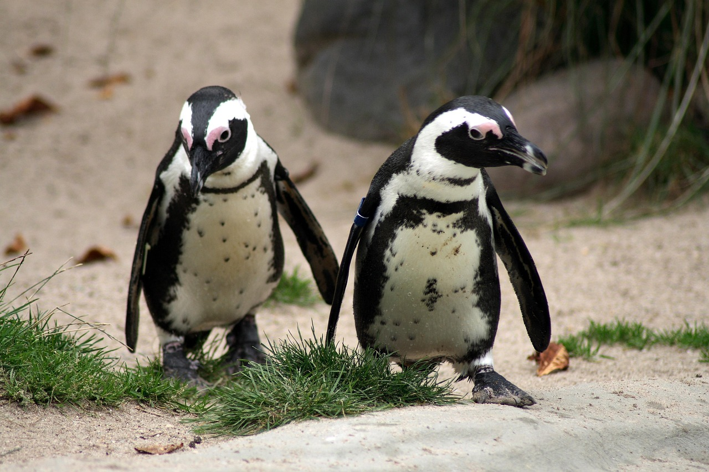

install.packages(
c("palmerpenguins", "tidyverse", "tidymodels",
"broom", "car", "corrplot", "GGally",
"patchwork", "lmtest")
)Predictive Modeling of Penguin Body Mass
r
regression
data-visualization
Regression models on the Palmer Penguins dataset reveal how much species identity shapes morphometric relationships. Simpson’s Paradox emerges clearly, reversing an apparent correlation once species is accounted for.

Penguins at Palmer Station, Antarctica.
Introduction
How dramatically can a single confounding variable flip a statistical relationship? The Palmer Penguins dataset provides a striking demonstration. When predicting body mass from bill measurements, the overall correlation between bill depth and body mass appears negative. However, separating the data by species reveals that every single within-species relationship is positive. This is Simpson’s Paradox in action.
The Palmer Penguins dataset, collected by Dr. Kristen Gorman at Palmer Station Antarctica, provides morphometric measurements for three penguin species: Adelie (Pygoscelis adeliae), Chinstrap (Pygoscelis antarcticus), and Gentoo (Pygoscelis papua). Body mass serves as a key indicator of penguin health, reproductive success, and population dynamics, so accurate predictive models carry genuine conservation value (Gorman et al., 2014).
We walk through the full regression workflow: from exploratory analysis to tidymodels cross-validation, from simple linear regression to species-aware models with interaction terms. The journey teaches as much about confounding and model selection as it does about penguins.
Motivations
- To provide a concrete example of Simpson’s Paradox visible in scatter plots rather than only in textbooks.
- To examine whether adding species as a covariate meaningfully improves a regression model or just adds complexity.
- To practice the tidymodels framework for systematic model comparison and cross-validation.
- To understand when interaction terms justify their added complexity and when a simpler additive model suffices.
- To create publication-quality coefficient plots and diagnostic visualizations.
Objectives
- Build and validate multiple regression models for predicting penguin body mass from morphometric measurements.
- Demonstrate Simpson’s Paradox with real data and show how species identity reverses the bill depth-body mass correlation.
- Compare linear regression and regularized regression (elastic net) using the tidymodels framework with 10-fold cross-validation.
- Create publication-quality visualizations including coefficient plots, partial regression plots, and diagnostic panels.
Errors and better approaches are welcome; see the Feedback section at the end.
Prerequisites and Setup
Background: This post assumes familiarity with basic R syntax, the tidyverse, and an introductory understanding of linear regression (what R-squared means, what a residual is).
Required Packages:
Load Libraries:
library(palmerpenguins)
library(tidyverse)
library(tidymodels)
library(broom)
library(car)
library(corrplot)
library(GGally)
library(patchwork)
theme_set(theme_minimal(base_size = 12))
species_colors <- c(
"Adelie" = "#FF6B35",
"Chinstrap" = "#7B68EE",
"Gentoo" = "#2E8B57"
)What is Regression Modeling?
Regression modeling is a way to express the relationship between a response variable (here, body mass) and one or more predictor variables (here, bill length, bill depth, flipper length, and species). In simple terms, a regression model draws the best straight line through a cloud of points, and the R-squared value reports what fraction of the scatter that line explains.
The key idea is that regression coefficients are conditional: they describe the relationship between a predictor and the response after accounting for everything else in the model. That distinction matters enormously when confounding variables like species are in play.
Getting Started: Initial Exploration
Before fitting any models, an exploration of the data helps to understand distributions and spot potential issues.
data(penguins)
glimpse(penguins)
penguins |>
summarise(
across(everything(), ~sum(is.na(.)))
) |>
pivot_longer(
everything(),
names_to = "variable",
values_to = "missing"
) |>
filter(missing > 0)
penguins_clean <- penguins |>
drop_na()
cat(
"Dataset dimensions after removing NAs:",
nrow(penguins_clean), "rows and",
ncol(penguins_clean), "columns\n"
)Univariate Distributions
Plotting histograms and boxplots side-by-side by species immediately reveals the structure in the data.
p1 <- ggplot(
penguins_clean,
aes(x = body_mass_g, fill = species)
) +
geom_histogram(
bins = 30, alpha = 0.7,
position = "identity"
) +
scale_fill_manual(values = species_colors) +
labs(
title = "Distribution of Body Mass by Species",
x = "Body Mass (g)", y = "Count"
) +
theme(legend.position = "none")
p2 <- ggplot(
penguins_clean,
aes(x = body_mass_g, y = species,
fill = species)
) +
geom_boxplot(alpha = 0.7) +
scale_fill_manual(values = species_colors) +
labs(x = "Body Mass (g)", y = NULL) +
theme(legend.position = "none")
p3 <- ggplot(
penguins_clean,
aes(x = flipper_length_mm, fill = species)
) +
geom_histogram(
bins = 30, alpha = 0.7,
position = "identity"
) +
scale_fill_manual(values = species_colors) +
labs(
title = "Flipper Length by Species",
x = "Flipper Length (mm)", y = "Count"
) +
theme(legend.position = "none")
p4 <- ggplot(
penguins_clean,
aes(x = flipper_length_mm, y = species,
fill = species)
) +
geom_boxplot(alpha = 0.7) +
scale_fill_manual(values = species_colors) +
labs(x = "Flipper Length (mm)", y = NULL)
(p1 + p2) / (p3 + p4) +
plot_annotation(
title = paste(
"Morphometric Distributions",
"Across Penguin Species"
)
)The distributions reveal clear species-level differences. Gentoo penguins exhibit the largest body mass and flipper length, followed by Chinstrap and Adelie. These patterns indicate early on that any predictive model should account for species identity.
Correlation Analysis
Understanding the correlation structure informs model building and helps flag multicollinearity:
numeric_vars <- penguins_clean |>
select(
bill_length_mm, bill_depth_mm,
flipper_length_mm, body_mass_g
)
correlation_matrix <- cor(numeric_vars)
corrplot(
correlation_matrix,
method = "color",
type = "upper",
order = "hclust",
tl.cex = 0.9,
tl.col = "black",
addCoef.col = "black",
number.cex = 0.8,
col = colorRampPalette(
c("#2166AC", "white", "#B2182B")
)(100)
)Flipper length shows the strongest correlation with body mass (r = 0.87), followed by bill length (r = 0.60). Bill depth shows a weaker positive correlation (r = 0.43). The strong flipper-body mass correlation is consistent with allometric scaling relationships in vertebrates.
Simpson’s Paradox: A Cautionary Tale
This finding is perhaps the most striking. The overall correlation between bill depth and body mass appears negative, but within each species the relationship is positive. Pearl (2014) calls this Simpson’s Paradox.
p_overall <- ggplot(
penguins_clean,
aes(x = bill_depth_mm, y = body_mass_g)
) +
geom_point(alpha = 0.5) +
geom_smooth(
method = "lm", se = TRUE, color = "black"
) +
labs(
title = "Overall: Negative Relationship",
subtitle = paste(
"r =",
round(
cor(penguins_clean$bill_depth_mm,
penguins_clean$body_mass_g), 2
)
),
x = "Bill Depth (mm)",
y = "Body Mass (g)"
)
p_species <- ggplot(
penguins_clean,
aes(x = bill_depth_mm, y = body_mass_g,
color = species)
) +
geom_point(alpha = 0.7) +
geom_smooth(method = "lm", se = TRUE) +
scale_color_manual(values = species_colors) +
labs(
title = "Within Species: Positive",
x = "Bill Depth (mm)",
y = "Body Mass (g)"
) +
theme(legend.position = "bottom")
p_overall + p_speciesThe reversal occurs because Gentoo penguins have larger bodies but shallower bills than Adelie penguins, and species acts as a confounding variable. This example proves more instructive than many textbook explanations of confounding.
Species-Specific Patterns
A comprehensive view of all pairwise relationships by species:
ggpairs(
penguins_clean,
columns = c(
"bill_length_mm", "bill_depth_mm",
"flipper_length_mm", "body_mass_g"
),
aes(color = species, alpha = 0.7),
lower = list(continuous = "smooth_loess"),
upper = list(continuous = "cor"),
diag = list(continuous = "densityDiag")
) +
scale_color_manual(values = species_colors) +
scale_fill_manual(values = species_colors) +
theme_minimal()
Midway through the analysis: time for a closer look at the models.
Building a Model
Simple Linear Regression
The analysis starts with the simplest possible model: flipper length as the sole predictor, given its strong correlation with body mass.
model_simple <- lm(
body_mass_g ~ flipper_length_mm,
data = penguins_clean
)
summary(model_simple)
simple_metrics <- glance(model_simple)
cat(
"\nSimple Model R-squared:",
round(simple_metrics$r.squared, 3), "\n"
)
cat(
"Simple Model RMSE:",
round(sqrt(mean(model_simple$residuals^2)), 1),
"g\n"
)The simple model explains approximately 76% of the variance in body mass, with each millimeter increase in flipper length associated with a 49.7g increase in body mass. Not bad for one predictor; species likely matters as well.
Multiple Linear Regression
Adding the remaining morphometric predictors:
model_multiple <- lm(
body_mass_g ~ bill_length_mm +
bill_depth_mm + flipper_length_mm,
data = penguins_clean
)
summary(model_multiple)
vif_values <- vif(model_multiple)
cat("\nVariance Inflation Factors:\n")
print(round(vif_values, 2))The VIF values are all below 5, indicating that multicollinearity is not a serious concern. Checking this before adding more terms is reassuring.
Species-Aware Model
Including species as a factor should improve predictions by accounting for the systematic differences observed in the exploratory analysis:
model_species <- lm(
body_mass_g ~ bill_length_mm +
bill_depth_mm + flipper_length_mm + species,
data = penguins_clean
)
summary(model_species)This is where things got interesting. All morphometric coefficients changed in magnitude and direction when species was included, consistent with the Simpson’s Paradox observed earlier. Bill depth, which appeared to have a negative coefficient in the multiple regression, now shows a positive coefficient within the species-stratified framework.
Interaction Effects
The next step explores whether the relationships between morphometric variables and body mass differ across species:
model_interactions <- lm(
body_mass_g ~ (bill_length_mm +
bill_depth_mm + flipper_length_mm) * species,
data = penguins_clean
)
summary(model_interactions)
anova(model_species, model_interactions)Making Predictions
To see how the species-aware model performs in practice, the following code generates predictions with 95% prediction intervals:
predictions <- predict(
model_species,
interval = "prediction",
level = 0.95
)
results_df <- penguins_clean |>
mutate(
predicted = predictions[, "fit"],
lower_pi = predictions[, "lwr"],
upper_pi = predictions[, "upr"],
residual = body_mass_g - predicted
)
ggplot(
results_df,
aes(x = predicted, y = body_mass_g)
) +
geom_point(
aes(color = species),
alpha = 0.7, size = 2
) +
geom_abline(
slope = 1, intercept = 0,
linetype = "dashed",
color = "gray40", linewidth = 1
) +
scale_color_manual(values = species_colors) +
labs(
title = "Predicted vs Actual Body Mass",
subtitle = paste(
"Species-aware model, R-squared =",
round(
summary(model_species)$r.squared, 3
)
),
x = "Predicted Body Mass (g)",
y = "Actual Body Mass (g)",
color = "Species"
) +
theme(legend.position = "bottom") +
coord_equal()The points cluster tightly around the identity line, and the model performs well across all three species rather than fitting one species at the expense of the others.
The tidymodels Approach
Following the workflow demonstrated by Julia Silge in her TidyTuesday screencast on Palmer Penguins, the tidymodels framework provides systematic model comparison and validation.
Data Splitting
set.seed(123)
penguin_split <- initial_split(
penguins_clean, prop = 0.75, strata = species
)
penguin_train <- training(penguin_split)
penguin_test <- testing(penguin_split)
cat(
"Training set:",
nrow(penguin_train), "observations\n"
)
cat(
"Test set:",
nrow(penguin_test), "observations\n"
)Recipe Specification
penguin_recipe <- recipe(
body_mass_g ~ bill_length_mm +
bill_depth_mm + flipper_length_mm +
species + sex + island,
data = penguin_train
) |>
step_dummy(all_nominal_predictors()) |>
step_normalize(all_numeric_predictors())
penguin_recipeModel Specifications
The analysis compares linear regression with regularized regression (elastic net) to see whether penalizing coefficient size improves out-of-sample performance:
lm_spec <- linear_reg() |>
set_engine("lm")
glmnet_spec <- linear_reg(
penalty = tune(), mixture = tune()
) |>
set_engine("glmnet")Workflow Creation
lm_workflow <- workflow() |>
add_recipe(penguin_recipe) |>
add_model(lm_spec)
glmnet_workflow <- workflow() |>
add_recipe(penguin_recipe) |>
add_model(glmnet_spec)Cross-Validation Setup
set.seed(234)
penguin_folds <- vfold_cv(
penguin_train, v = 10, strata = species
)Linear Regression Results
lm_results <- fit_resamples(
lm_workflow,
resamples = penguin_folds,
control = control_resamples(save_pred = TRUE)
)
collect_metrics(lm_results)Regularized Regression with Tuning
glmnet_grid <- grid_regular(
penalty(range = c(-4, 0)),
mixture(range = c(0, 1)),
levels = 10
)
glmnet_results <- tune_grid(
glmnet_workflow,
resamples = penguin_folds,
grid = glmnet_grid,
control = control_grid(save_pred = TRUE)
)
show_best(glmnet_results, metric = "rmse", n = 5)Final Model Selection
best_glmnet <- select_best(
glmnet_results, metric = "rmse"
)
final_workflow <- finalize_workflow(
glmnet_workflow, best_glmnet
)
final_fit <- last_fit(
final_workflow, penguin_split
)
collect_metrics(final_fit)Checking Our Work
Residual Analysis
The species-aware linear model is examined for assumption violations:
par(mfrow = c(2, 2))
plot(model_species)
par(mfrow = c(1, 1))The diagnostic plots reveal:
- Residuals vs Fitted: No clear pattern, suggesting the linearity assumption holds.
- Q-Q Plot: Residuals approximately follow a normal distribution with slight deviation in tails.
- Scale-Location: Relatively constant spread; homoscedasticity appears reasonable.
- Residuals vs Leverage: No high-leverage outliers with large residuals.
Formal Diagnostic Tests
shapiro_test <- shapiro.test(
residuals(model_species)
)
cat(
"Shapiro-Wilk test p-value:",
round(shapiro_test$p.value, 4), "\n"
)
library(lmtest)
bp_test <- bptest(model_species)
cat(
"Breusch-Pagan test p-value:",
round(bp_test$p.value, 4), "\n"
)Things to Watch Out For
- Simpson’s Paradox is easy to miss. Pooling data across species produced misleading coefficient signs. Always check within-group relationships before interpreting aggregate patterns.
- VIF alone does not tell the full story. Even with low VIF values, adding species flipped the sign of the bill depth coefficient.
- Interaction terms add complexity fast. The interaction model added six parameters for marginal improvement in adjusted R-squared (0.868 to 0.872).
- Stratified splitting matters. Without
strata = speciesininitial_split(), the training set could under-represent Chinstrap penguins (the smallest group). - Residual normality tests can be overly sensitive. With 333 observations, the Shapiro-Wilk test may flag small deviations that have little practical effect on inference.
Advanced Visualizations
Coefficient Plot
coef_df <- tidy(
model_species, conf.int = TRUE
) |>
filter(term != "(Intercept)") |>
mutate(term = fct_reorder(term, estimate))
ggplot(coef_df, aes(x = estimate, y = term)) +
geom_vline(
xintercept = 0,
linetype = "dashed",
color = "gray50"
) +
geom_errorbarh(
aes(xmin = conf.low, xmax = conf.high),
height = 0.2, color = "gray40"
) +
geom_point(size = 3, color = "#2E8B57") +
labs(
title = paste(
"Regression Coefficients with",
"95% Confidence Intervals"
),
subtitle = paste(
"Predicting body mass from",
"morphometric variables and species"
),
x = "Coefficient Estimate (g)",
y = NULL
) +
theme(panel.grid.major.y = element_blank())Partial Regression Plots
p1 <- ggplot(
penguins_clean,
aes(x = flipper_length_mm, y = body_mass_g)
) +
geom_point(
aes(color = species), alpha = 0.6
) +
geom_smooth(
method = "lm", se = TRUE,
color = "gray30"
) +
scale_color_manual(values = species_colors) +
labs(
title = "Flipper Length",
x = "Flipper Length (mm)",
y = "Body Mass (g)"
) +
theme(legend.position = "none")
p2 <- ggplot(
penguins_clean,
aes(x = bill_depth_mm, y = body_mass_g,
color = species)
) +
geom_point(alpha = 0.6) +
geom_smooth(method = "lm", se = TRUE) +
scale_color_manual(values = species_colors) +
labs(
title = "Bill Depth (by Species)",
x = "Bill Depth (mm)",
y = "Body Mass (g)"
) +
theme(legend.position = "none")
p3 <- ggplot(
penguins_clean,
aes(x = bill_length_mm, y = body_mass_g,
color = species)
) +
geom_point(alpha = 0.6) +
geom_smooth(method = "lm", se = TRUE) +
scale_color_manual(values = species_colors) +
labs(
title = "Bill Length (by Species)",
x = "Bill Length (mm)",
y = "Body Mass (g)"
) +
theme(legend.position = "bottom")
p1 + p2 + p3 +
plot_annotation(
title = "Morphometric Predictors of Body Mass"
)Model Comparison Summary
model_comparison <- tibble(
Model = c(
"Simple (Flipper)", "Multiple",
"Species-Aware", "Interactions"
),
R_squared = c(
summary(model_simple)$r.squared,
summary(model_multiple)$r.squared,
summary(model_species)$r.squared,
summary(model_interactions)$r.squared
),
Adj_R_squared = c(
summary(model_simple)$adj.r.squared,
summary(model_multiple)$adj.r.squared,
summary(model_species)$adj.r.squared,
summary(model_interactions)$adj.r.squared
),
RMSE = c(
sqrt(mean(model_simple$residuals^2)),
sqrt(mean(model_multiple$residuals^2)),
sqrt(mean(model_species$residuals^2)),
sqrt(mean(model_interactions$residuals^2))
)
)
model_comparison |>
mutate(
across(where(is.numeric), ~round(.x, 3))
) |>
knitr::kable(
caption = "Model Performance Comparison"
)
model_comparison |>
pivot_longer(
cols = c(R_squared, RMSE),
names_to = "Metric",
values_to = "Value"
) |>
ggplot(
aes(x = fct_reorder(Model, Value),
y = Value, fill = Model)
) +
geom_col() +
facet_wrap(~Metric, scales = "free") +
labs(
title = "Model Performance Comparison",
x = NULL, y = "Value"
) +
theme(
axis.text.x = element_text(
angle = 45, hjust = 1
),
legend.position = "none"
) +
scale_fill_viridis_d(option = "D")Stepping back to reflect on what the models revealed.
What Did We Learn?
Lessons Learned
Conceptual Understanding:
- Flipper length is the strongest single predictor of body mass (R-squared = 0.76), consistent with allometric scaling in vertebrates.
- Including species raises the R-squared from 0.76 to 0.87, confirming that species identity is a first-order driver of morphometric variation.
- Simpson’s Paradox reversed the sign of the bill depth coefficient: negative overall, positive within each species.
- Interaction terms yielded marginal improvement (adjusted R-squared from 0.868 to 0.872), suggesting the additive species-aware model captures most of the relevant structure.
Technical Skills:
- The tidymodels pipeline covers recipe specification, workflow creation, cross-validation with
vfold_cv(), and hyperparameter tuning withtune_grid(). - The
broompackage (tidy(),glance(),augment()) made it straightforward to extract model summaries into tidy data frames for plotting. corrplotandGGally::ggpairs()provided quick multivariate overviews that guided variable selection.- The
car::vif()function gave a fast check on multicollinearity before building larger models.
Gotchas and Pitfalls:
- Pooling data across species without checking within-group patterns led to misleading conclusions about bill depth.
- The Shapiro-Wilk normality test flagged minor tail deviations that had no practical effect on model predictions.
- Forgetting to set
strata = speciesin data splitting could under-represent the 68 Chinstrap observations in either the training or test set. - Using
position = "identity"in histograms is essential when comparing overlapping distributions; the default stacking obscures the shape of each group.
Limitations
- The dataset contains 333 complete observations, adequate for these analyses but limiting for complex interaction models with many parameters.
- Data spans 2007 to 2009 and does not account for potential year-to-year environmental variation that could affect body mass.
- All data comes from Palmer Station, limiting generalizability to other Antarctic regions or penguin populations.
- The regression coefficients describe associations, not causal effects. Morphometric variables are biologically related and may not represent independent causal pathways.
- Sex was not included in the base regression models (only in the tidymodels recipe), so sexual dimorphism is only partially addressed.
Opportunities for Improvement
- Mixed-effects models: Account for island as a random effect to improve population-level inference.
- Sex-specific models: Develop separate models for males and females to address known sexual dimorphism (Gorman et al., 2014).
- Temporal analysis: Incorporate year effects to understand environmental influences on morphometry.
- Tree-based comparison: Compare regularized regression with random forests and gradient boosting to assess nonlinear relationships.
- External validation: Test model performance on penguin data from other Antarctic research stations.
- Bayesian regression: Use informative priors based on allometric scaling theory to improve small-sample inference.
Wrapping Up
The main finding is that a species-aware linear model explains 87% of the variance in penguin body mass with a prediction error of approximately 289 grams. That is a strong result for a model using only four predictors.
The key lesson is that confounding variables can completely reverse apparent relationships. The Simpson’s Paradox demonstration warrants careful attention whenever aggregate patterns are interpreted. The tidymodels workflow, with its recipe-workflow-resample pattern, proves systematic and reproducible.
For analysts attempting similar work, the advice is to start with thorough exploratory analysis before fitting any models. The EDA phase revealed the species structure that turned out to be the single most important predictor, and it surfaced Simpson’s Paradox before it could silently distort model coefficients.
In conclusion, four points merit emphasis. First, flipper length alone predicts body mass with R-squared = 0.76, establishing a strong single- predictor baseline. Second, adding species raises R-squared to 0.87 and corrects misleading coefficient signs introduced by confounding. Third, interaction terms provide marginal improvement (adjusted R-squared 0.868 to 0.872) at the cost of six additional parameters, a trade-off that the additive model renders unnecessary for most purposes. Fourth, the Palmer Penguins dataset serves as an instructive teaching resource for confounding, Simpson’s Paradox, and the role of domain knowledge in statistical modeling.
See Also
Related posts:
- Palmer Penguins Part 1: EDA and Simple Regression
- Palmer Penguins Part 3: Cross-Validation and ML Comparison
- Palmer Penguins Part 4: Model Diagnostics
Key resources:
- Gorman, K.B., Williams, T.D., & Fraser, W.R. (2014). Ecological sexual dimorphism and environmental variability within a community of Antarctic penguins (genus Pygoscelis). PLOS ONE, 9(3), e90081. https://doi.org/10.1371/journal.pone.0090081
- Horst, A.M., Hill, A.P., & Gorman, K.B. (2022). Palmer Archipelago Penguins Data in the palmerpenguins R Package. The R Journal, 14(1), 244-254. https://doi.org/10.32614/RJ-2022-020
- Silge, J. (2020). Get started with tidymodels and Palmer penguins. https://juliasilge.com/blog/palmer-penguins/
- Scherer, C. (2020). TidyTuesday 2020/31: Palmer Penguins visualization. https://github.com/z3tt/TidyTuesday
- palmerpenguins package documentation
- tidymodels framework
Reproducibility
Data source: The palmerpenguins R package (version 0.1.1), which provides the penguins dataset collected at Palmer Station, Antarctica.
Analysis pipeline:
Rscript analysis/scripts/01_prepare_data.R
Rscript analysis/scripts/02_fit_models.R
Rscript analysis/scripts/03_generate_figures.R
quarto render index.qmdSession information:
Let’s Connect
Have questions, suggestions, or spot an error? Let me know.
- GitHub: rgt47
- Twitter/X: @rgt47
- LinkedIn: Ronald Glenn Thomas
- Email: Contact form
I would enjoy hearing from you if:
- An error or a better approach to any of the code in this post comes to mind.
- There are suggestions for topics to see covered.
- The interest is in discussing R programming, data science, or reproducible research.
- There are questions about anything in this tutorial.
- The goal is simply to say hello and connect.